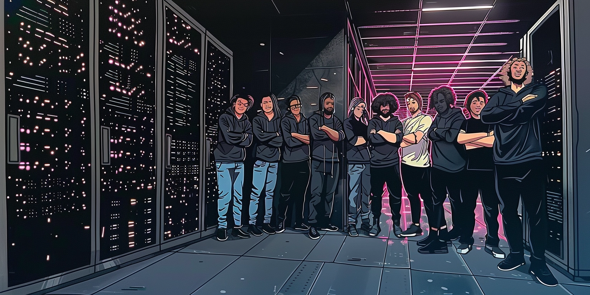

La Prépa numérique vous présente les projets effectué en son sein, chacun de nous avons mis du coeur à l'ouvrage pour ces projets présenté en fin de prépa, l'école de la Deuxième Chance nous a permis de nous lancer ou dans d'autre cas acquérir des bases dans le domaine du web et aussi via différents modules en apprendre plus sur le monde professionnel.
Note de la prépa : si vous hésitez, foncez, aucune perte de temps dans cette formation partagé en moitié de numérique et l'autre moitié en accompagnement et en insertion professionnel !